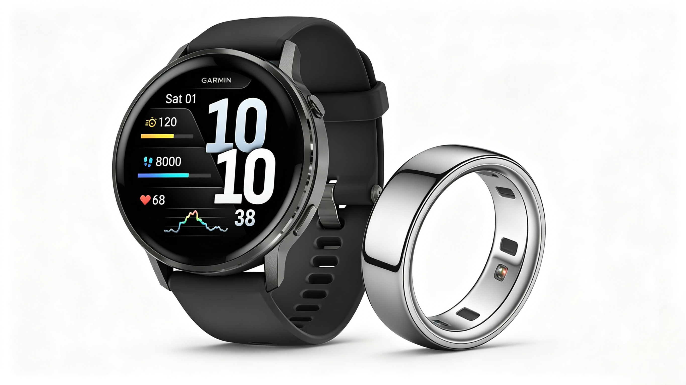
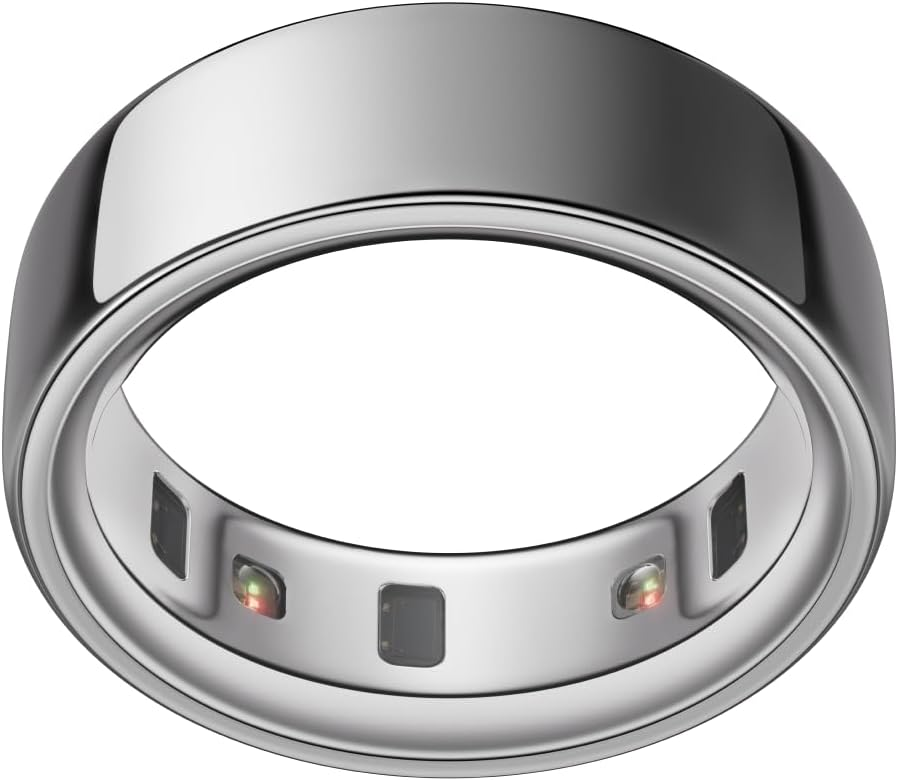

WHOOP is a leader in recovery and sleep tracking, but its mandatory monthly subscription keeps many shoppers away. If you want accurate HRV, sleep quality and workout data without recurring fees, these reliable alternatives are perfect for you. We picked the most practical non-subscription trackers after real-world testing.
The biggest downside of WHOOP 4.0 and WHOOP 5.0 is the ongoing membership cost. A one-time purchase tracker helps you save money in the long run, while still delivering core health tracking features you need daily.

The Oura Ring is the most comparable option to WHOOP. It delivers professional-level sleep tracking, HRV monitoring and recovery analysis. All core functions work fully without any subscription. Its slim ring design is ultra-light and comfortable to wear 24 hours a day.
✅ Best for: Deep sleep tracking & recovery monitoring
✅ No mandatory subscription
Check Oura Ring Price
Fitbit Sense 2 is a budget-friendly pick with solid heart rate, sleep and stress tracking. Most key features are free permanently. It also comes with built-in GPS and long battery life, ideal for casual users and fitness lovers who want stable performance at a lower cost.
✅ Best for: Budget users & daily fitness tracking
✅ No mandatory subscription
Check Fitbit Sense 2 Price| Product | Subscription Required | Battery Life | Core Strength |
|---|---|---|---|
| Oura Ring Gen 3 | No | 4-7 days | Sleep & HRV Tracking |
| Fitbit Sense 2 | No | Up to 6 days | All-day Fitness Tracking |
Q: Can these alternatives match WHOOP’s tracking accuracy?
A: Yes. Both picks offer reliable sleep, heart rate and recovery data for daily use, with no recurring membership fees.
Q: Which one should I pick between Oura Ring and Fitbit Sense 2?
A: Choose Oura Ring if you focus on sleep and recovery. Go for Fitbit Sense 2 if you prefer a cost-effective all-round tracker.
Compare details: WHOOP 5.0 vs 4.0 – Is It Worth Upgrading?